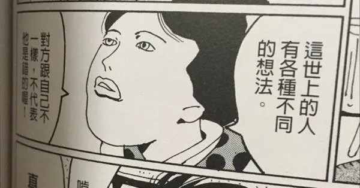

Unable to Get Closer Because We Don't Understand: Reading 《滌，這個不正常的人》 #2
University, volunteering, internships, grad school, work: after I'd seen many things and made many friends outside, climbed out of my inferiority and felt I should have value, then just when they expected you to become more social through interacting with more people, they felt you'd changed. More extreme, more argumentative, more petty. You point out problems in daily life, change your habits and hold to them, start refusing to join certain activities. All these things I did because I felt I was part of society weren't seen as a positive thing.
Do you want to understand me, or change me?
Rogers said that people always give "evaluative understanding", for example: "I've had an experience like yours, but my reaction was different from yours." This critical kind of understanding is what people often do: judging others' behaviour that's different from their own, and saying "I understand" and "I know" while doing it, but that's not real "empathy". (p152)
Rogers said: "If someone could understand how I really feel, rather than trying to analyse or judge me, then I would surely blossom and grow in that kind of climate." (p153)

I've always thought that "making choices" is a matter of personal preference. Sometimes, in order to work with others, we look for reasons to convince them to accept our choice, or we compromise on a choice through negotiation.
But why, in my own life, with choices that only affect me, do I still have to cater to the eyes of the world and convince others to accept them? Some people pay expensive rent to live next to the office so they can sleep in a bit; some would rather commute 45 minutes every day to separate work from life. Some want to earn lots of money so they can spend without blinking at any time; some dream of owning a piece of land and living a self-sufficient, ordinary life.
These are all just personal preferences with nothing to do with right or wrong.
But my choices never won acceptance from my family, and even made me feel like I was being told what to do. This often leaves me confused about my family relationships: because they're family, do I have to accept their values about making choices? What I often feel is evaluative understanding, or unwillingness to understand.
I'm not writing this to complain publicly about family relationships or to blame their education of me (in fact I don't), but to talk about something that has long troubled me through the conflict between independent individuals. And in this process I also clearly understand that I'm not the only one in pain, enduring what can't be understood and being denied. They are also enduring my refusal to share, my bad attitude, my polite and distant manner.
The problem of relationships that can't get closer and can't understand each other is like the elephant in the room that everyone deliberately ignores. And I'm like a hedgehog, always ready to strike back, because showing one vulnerable spot and expressing my real feelings has only ever brought hurt, and I'm too afraid of being hurt again.
Is giving up better?
Are you stuck here, and is it all someone else's responsibility? What reason does Mom have to give you money?
My tone was a bit harsh. Di listened and then said calmly: "That's easier." (p144)
When Di said "that's easier", it also made me think: is giving up all my own persistence and will in front of my family an easier way to keep the peace in the relationship? But is that decision the most "happy" one? Isn't it choosing not to let them know the real me?
Accepting that someone will never understand you in their whole life, and choosing to give up communicating and conveying my thoughts, compromising and obeying at every moment of differing opinions, means I've given up making any effort for this relationship. And the only reason I'm "still here" is that we're in a relationship that can't easily be ended. Is that better? Better for whom?
In social interactions, we can sometimes dodge, like skiing, the people who crash into us, the things that conflict with us, but the difference is that they are always there. Although until someone changes, we can only keep this uncomfortable status quo, blindfolded and playing minesweeper together, at least I still feel pain, and that's because I still care. I haven't given up.
In the process of growing through learning and exploring, I grew my own way of living and my own values, and also the softness to appreciate differences and live with them. I grew a self-centred, mistake-fearing personality that can't relax, and at the same time grew the parts of me that think independently, are careful in what I do, and are likeable. Nature and nurture, choosing to resist or to comply, are woven together in a tangle that's hard to put into words, and they are two sides of the same coin.
And because I'm still growing and still practising, I tell myself it's okay.